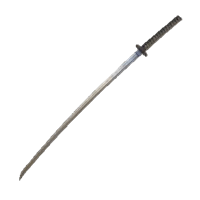

ТИП УРОНА
Рубящий/колющий
АТАКА
74
ИМЯ:
Кинжал
ОПИСАНИЕ:
Простой кинжал с прямым лезвием.
Урон от него скромен, а дальность атаки невысока, зато его можно быстро всадить в жертву несколько раз подряд. Эффективен для критических ударов.
МЕСТОНАХОЖДЕНИЕ:
Продают Старые служанки-близнецы за 400 рун.
Выпадает из Разбойников
ТИП УРОНА
Рубящий/колющий
АТАКА
79
ИМЯ:
Жало скорпиона
ОПИСАНИЕ:
Кинжал из хвоста огромного скорпиона, лоснящийся от красной гнили
Церемониальное орудие еретиков, созданное из реликвии пленённого внешнего бога.
МЕСТОНАХОЖДЕНИЕ:
Локация Великий клуатр. Оружие лежит в сундуке, в здании которое охраняют Родичи гнили.

ТИП УРОНА
Рубящий/колющий
АТАКА
115
ИМЯ:
Утигатана
ОПИСАНИЕ:
Катана с длинным клинком, заточенным с одной стороны. Уникальное оружие самураев из Страны тростника.
Её лезвие с волнообразной линией закалки отличается необычайной остротой, а рубящие атаки вызывают кровотечение.
МЕСТОНАХОЖДЕНИЕ:
Начальная экипировка класса Самурай.
Замогилье, локация Помертвелые катакомбы.
ТИП УРОНА
Рубящий/колющий
АТАКА
76
ИМЯ:
Реки крови
ОПИСАНИЕ:
Оружие Окины, мечника из Страны тростника. Проклятое оружие, убившее бесчисленное кол-во людей.
Когда Мог Повелитель Крови впервые ощутил на собственной плоти меч Окины и его безумие, он предложил мечнику жизнь демона, чья жажда всегда неутолена.
МЕСТОНАХОЖДЕНИЕ:
Вершины великанов, локация Храм покоя. Награда за убийство Окины, Окровавленного пальца.
ТИП УРОНА
Обычный/колющий
АТАКА
164
ИМЯ:
Двуручник
ОПИСАНИЕ:
Огромный двуручник из необработанного железа. Сокрушает врагов своим неимоверным весом.
Обращение с таким оружием требует от владельца силы, недоступной обычным людям. Именно поэтому оно применяется для убийства в том числе и созданий нечеловеческой природы.
МЕСТОНАХОЖДЕНИЕ:
Звёздные пустоши. Оружие лежит в сундуке повозки, на северо-западе от локации Руины Калема.